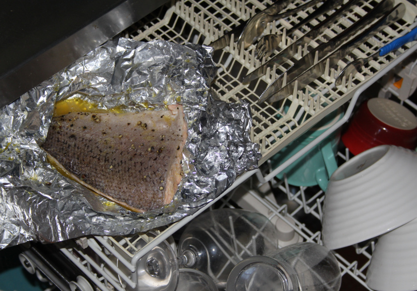

Dishwasher Salmon

Like many good meals, the dishwasher salmon's secret is in the way it is cooked. The searing hot dishwasher jets make the salmon just fall
apart in your mouth. You can also do a load of dishes along with your dinner to save your precious evening time!
Ingredients
- Fresh Salmon Fillets
- Aluminum foil
- Fresh lemon wedge
- Pepper
- Tartar sauce
Directions
- Sprinkle pepper onto the top and bottom of your salmon fillets
- Wrap each fillet in two layers of aluminum foil
- Put the salmon fillets in your dishwasher for one cycle
- Check salmon color. If still raw, put in back in for one more cycle
- Remove and serve with lemon wedge
- If desired, liberal use of tartar sauce may be used to mask the salmon's unique flavor profile
Return to Main Page